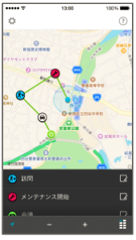

管理サイト¶
ver.2.29.0 (2018/10/25)¶
ver.2.26.0 (2018/6/28)¶
{kind=link}
{kind=link}
{kind=link}
ver.2.25.0 (2018/5/24)¶
ver.2.23.0 (2018/3/29)¶
主な変更点¶
ステータス¶
ステータスアイコンにオリジナルの画像をアップロードできるようになりました。
設定したステータスアイコンがアプリでも表示されるようになりました。

- iOS ver.3.16.0 ・・・ 2017年11月30日リリース済み
- Android ver.3.17.0 ・・・ 2017年11月30日リリース済み
ステータスアイコンのうち、以下の2つの画像を廃止します。
報告書¶
スポット項目の初期入力値を変更できるようになりました。
従来はチェックインしたスポットが必ず初期入力されるようになっていましたが、１つの報告書内で 複数のスポットを入力する必要がある場合も考慮して、項目ごとに「初期入力する」「初期入力しない」を選択できるようにいたしました。
- iOS ver.3.18.0 ・・・ 2018年3月20日リリース予定
- Android 未定 ・・・ 開発中
改善¶
- グループ管理者が写真管理を利用する際に、グループ毎のデフォルト仕分け先・タグが有効にならない不具合を修正しました。
- 安定性の向上および、一部の不具合を修正しました。
ver.2.21.0 (2018/2/22)¶
ver.2.21.0 (2018/1/25)¶
ver.2.19.0 (2017/12/21)¶
ver.2.18.0 (2017/11/29)¶
ver.2.17.0 (2017/10/25)¶
ver.2.16.0 (2017/09/27)¶
ver.2.15.0 (2017/09/20)¶
ver.2.14.0 (2017/08/30)¶
ver.2.13.0 (2017/07/26)¶
ver.2.12.0 (2017/06/27)¶
ver.2.11.1 (2017/05/24)¶
{kind=link}
ver.2.11.0 (2017/04/26)¶
{kind=link}
ver.2.10.1 (2017/03/23)¶
{kind=link}
ver.2.9.11 (2016/12/19)¶
ver.2.9.9 (2016/09/27)¶
ver.2.9.7 (2016/07/27)¶
ver.2.9.0 (2016/02/29)¶
ver.2.8.15 (2015/11/25)¶
ver.2.8.14 (2015/11/11)¶
主な変更点¶
{kind=link}
改善¶
位置情報画面からプッシュ通知が送信できないというお問い合わせを多く頂いたので、 送信できない場合にFAQへご案内と、簡単な対処法を表示するように改善致しました。
注釈
他にもお問い合わせの内容を元に、随時マニュアルやFAQを更新しております。 お困りのことがあればご確認ください。 FAQはこちら https://gps-punch.jp/faq
ver.2.8.13 (2015/10/13)¶
ver.2.8.12 (2015/8/31)¶
ver.2.8.11 (2015/7/29)¶
ver.2.8.10 (2015/7/15)¶
ver.2.8.9 (2015/6/30)¶
ver.2.8.8 (2015/6/15)¶
ver.2.8.7 (2015/5/29)¶
主な変更点¶
位置情報¶
- 一般ユーザーも 行動管理 > 位置情報画面が利用できるようになりました。
- グループの権限に従い、「自分だけの行動履歴」「グループ全員の行動履歴」が地図で閲覧できるようになりました。
スポット¶
- スポット画面の用語をアプリの表記に合わせて、一部変更しました。
- スポットを一括登録する場合、スポットコード（旧：顧客コード）が必須になりました。
報告閲覧¶
- 報告書の閲覧時に、報告書の写真をオリジナルのサイズで表示できるようになりました。
- 一般ユーザーで閲覧できる報告書が、所属グループの「他メンバー情報の閲覧」設定と一致するようにしました。
報告書フォーマット¶
- 報告書を利用グループを設定しない状態でも登録・更新できるようになりました。
ver.2.8.6 (2015/5/13)¶
ver.2.8.4 (2015/3/31)¶
ver.2.8.2 (2015/2/27)¶
ver.2.8.1 (2015/2/13)¶
ver.2.8.0 (2015/1/30）¶
ver.2.7.14（2015/1/13）¶
ver.2.7.13 (2014/12/12)¶
ver.2.7.12 (2014/11/27）¶
主な変更点¶
位置情報¶
- 日付表示を修正して分かりやすくしました。
- ユーザーの最新情報表示 時の吹き出しに経過時間を表すカラーラベルを追加しました。
- 位置情報画面で抽出した複数のメンバにメッセージを送信できるようにしました。
スポット一覧¶
- スポット詳細のデザインを変更しました。
設定項目が増えたためレイアウトを変更しました。
- スポット顧客担当者の項目を追加しました。（一括登録も同様）
- スポット顧客担当者の編集画面を変更しました。
顧客担当者の設定項目が増えたため、何人かまとめて登録できるような画面にしました。